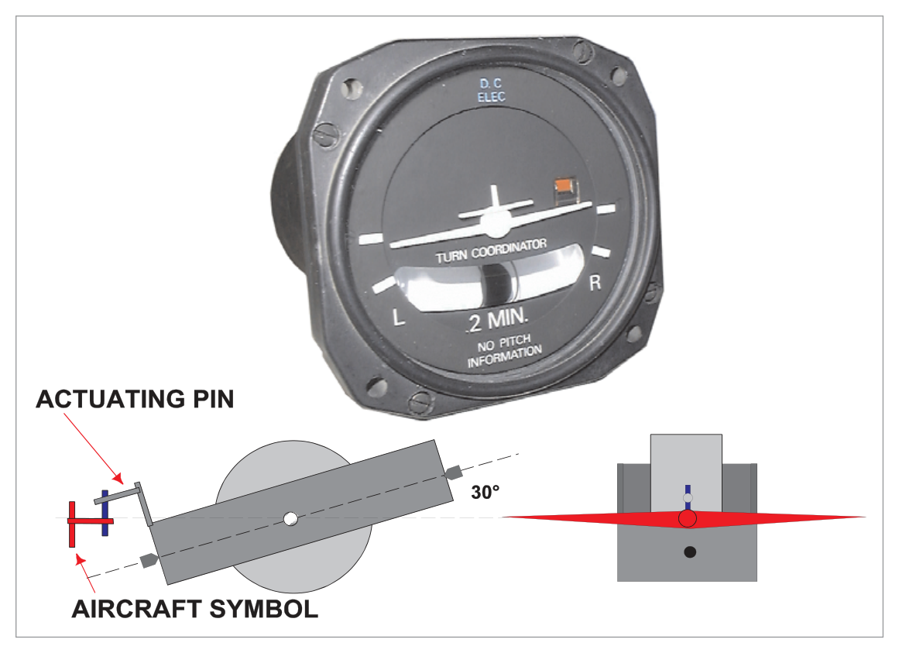

What this section covers: What the Turn Co-ordinator is; how it differs from the Turn and Bank Indicator.
The Turn Co-ordinator is an interesting development of the Turn and Bank Indicator (TBI). It uses the same fundamental principle — a rate gyroscope with a spring restraint — but with two key differences:
The precession axis of the rate gyroscope is inclined at approximately 30° with respect to the aircraft's longitudinal axis (in the TBI, the gyro axis is purely horizontal/lateral).
The display is an aircraft symbol (viewed from behind), rather than a needle, giving a more intuitive roll/turn representation.
2. Gyroscope Axis Orientation — 30° Inclination
What this section covers: Why the 30° inclination makes the gyroscope sensitive to both banking and turning.
In the standard TBI, the rate gyro axis is horizontal — the gyro is sensitive to yaw (turning about the vertical axis) only. In the Turn Co-ordinator, the single gimbal ring is pivoted longitudinally but the gyro axis is tilted at about 30° from the aircraft's longitudinal axis. This inclination gives the gyroscope sensitivity to:
Banking of the aircraft (roll input) — detected as the aircraft rolls.
Turning of the aircraft (yaw input) — as in the standard TBI.
The result is that when a turn is initiated by banking, the gyroscope precesses and moves the aircraft symbol to anticipate the resulting turn — even before the yaw rate has fully developed.
flowchart TD
TBI["Standard TBI\nRate Gyro (horizontal axis)\nSensitive to YAW only\n→ measures rate of turn"]
TC["Turn Co-ordinator\nRate Gyro (30° inclined)\nSensitive to ROLL + YAW\n→ anticipates turn from bank"]
TBI -->|"Key Difference"| TC

Fig 15.1 — Turn co-ordinator display: aircraft symbol with 'No Pitch Information' annotation; ball slip indicator below. Source p.196
3. Turn Co-ordinator Operation and Display
What this section covers: How the pilot uses the aircraft symbol for turn rate control; the role of the ball.
When a turn is initiated by banking, the inclined gyroscope precesses and moves the miniature aircraft symbol in the direction of bank, enabling the pilot to anticipate the resulting turn.
The pilot then controls the turn at the required rate by aligning the aircraft symbol with the graduations on the instrument dial. The rate of turn depends on the instrument design — typically Rate 1 (3°/second) is indicated at the standard graduation marks.
The Slip Indicator (Ball): The ball operates identically to the ball in the standard TBI. The ball must remain central for a balanced rate of turn. The ball is not affected by the 30° inclination of the gyro.
4. Important Annotation — No Pitch Information
CAUTION — "NO PITCH INFORMATION": The Turn Co-ordinator display resembles a miniature attitude indicator (artificial horizon), because the aircraft symbol can tilt to represent bank. The annotation "No Pitch Information" on the indicator scale is mandatory, to avoid any confusion with pitch control that might arise from the similarity in presentation to the gyro horizon. This instrument gives no indication of aircraft pitch attitude whatsoever.
5. Comparison: Turn Co-ordinator vs Turn and Slip Indicator
What this section covers: Side-by-side comparison of the two instruments.
Feature
Turn and Slip Indicator (TBI)
Turn Co-ordinator (TC)
Gyro type
Rate gyro
Rate gyro
Number of gimbals
1
1
Gimbal pivot axis
Lateral (horizontal)
Longitudinal
Gyro axis inclination
Purely horizontal
≈30° to longitudinal axis
Sensitive to
Yaw only
Roll AND Yaw
Turn anticipation
No — indicates only after yaw develops
Yes — responds to initial bank
Display type
Needle pointer
Aircraft symbol (miniature aircraft)
Slip indicator
Ball in curved tube
Ball in curved tube (same)
Pitch information
None
None ("No Pitch Information")
Can topple?
No (only 1 gimbal)
No (only 1 gimbal)
Quick Revision Summary — Chapter 15:
Turn Co-ordinator = development of TBI with inclined gyro axis at ≈30° to the longitudinal axis.
Single gimbal ring pivoted longitudinally (vs. TBI which pivots laterally).
Sensitive to both roll and yaw — anticipates turn from initial bank.
Display: miniature aircraft symbol, not a needle.
Ball (slip indicator) functions identically to the TBI — central = balanced turn.
"No Pitch Information" annotation is mandatory — the aircraft symbol gives no pitch data.
Like the TBI, the Turn Co-ordinator has only one gimbal — it cannot topple.
Q1.The gimbal ring of a turn co-ordinator is inclined at about 30° with respect to the aircraft's longitudinal axis in order to:
make the rate of turn more accurate
make the gyro sensitive to banking of the aircraft as well as to turning
make the gyro more effective during inverted flight
have a higher rotor speed which will prolong the life of the instrument
Correct Answer: (b) make the gyro sensitive to banking of the aircraft as well as to turning
Explanation: The 30° inclination of the gyro axis with respect to the aircraft's longitudinal axis makes the rate gyroscope sensitive to both roll (banking) and yaw (turning), unlike the standard TBI which responds to yaw only. This allows the Turn Co-ordinator to anticipate the turn from the initial banking motion. See Section 2.
Why the other options are wrong:
(a) — The 30° inclination does not improve rate of turn accuracy; it adds sensitivity to roll.
(c) — The inclination has nothing to do with inverted flight.
(d) — The rotor speed is determined by the power supply, not the gimbal inclination angle.
Instructor's Note: The 30° inclination is the defining physical difference between the Turn Co-ordinator and the standard TBI. Everything else (ball, spring, rate gyro principle) is the same.
Q2.If an aircraft turns as indicated in Figure 1 [aircraft symbol aligned with left Rate 1 mark]:
the aircraft will turn through 180° in two minutes
it will take one minute to turn through 90°
the aircraft is turning left at less than 3°/second
the aircraft is turning left at 3°/second
Correct Answer: (c) the aircraft is turning left at less than 3°/second
Explanation: The illustration shows the aircraft symbol aligned between the centre and the Rate 1 mark (left). This indicates a left turn at a rate less than Rate 1 (i.e., less than 3°/second). Rate 1 would place the symbol exactly on the Rate 1 graduation mark. See Section 3.
Why the other options are wrong:
(a) — 180° in 2 minutes = 1.5°/second, which is less than Rate 1 (3°/sec). While numerically possible for a very slow turn, this option incorrectly implies it is on the Rate 1 mark.
(b) — 90° in 1 minute = 1.5°/sec, again less than Rate 1. However, the question asks what the indication specifically means, not a calculation. If the symbol is between centre and the Rate 1 mark, it is less than Rate 1 by definition.
(d) — Rate 1 (3°/sec) would be indicated by the symbol exactly on the Rate 1 graduation, not between marks.
Instructor's Note: On the Turn Co-ordinator, the Rate 1 graduation is the standard reference mark. Symbol on the mark = Rate 1 = 3°/sec. Symbol between centre and mark = less than Rate 1.
Q3.A turn co-ordinator has (i) ..... pivoted (ii) ........ in the case
(i) two gimbal rings — (ii) orthogonally
(i) a single gimbal ring — (ii) longitudinally
(i) one gimbal ring — (ii) laterally
(i) two gimbal rings — (ii) mutually perpendicular
Correct Answer: (b) a single gimbal ring — pivoted longitudinally
Explanation: The Turn Co-ordinator has a single gimbal ring (like the TBI) but pivoted longitudinally in the case (unlike the TBI which pivots laterally). This longitudinal pivot, combined with the 30° gyro axis inclination, gives sensitivity to both roll and yaw. See Section 2 and comparison table in Section 5.
Why the other options are wrong:
(a) and (d) — "Two gimbal rings" is incorrect. Two rings would give two degrees of freedom (like a DGI or AH). The rate gyro instruments have only one gimbal.
(c) — "Laterally" describes the TBI, not the Turn Co-ordinator. The TC gimbal is pivoted longitudinally.
Instructor's Note: TBI = single gimbal, pivoted laterally. TC = single gimbal, pivoted longitudinally. Both have only one gimbal (one degree of freedom). This is the key exam fact about the TC.